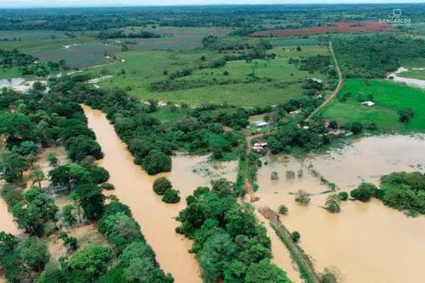

4 Week4 Policy：Flood management policy - San José
4.1 Summary
Because of its location in the Convergence Zone, Costa Rica is frequently affected by stormy weather and has limited chances of recovering from such tropical weather events, which is why extreme flooding is a frequent occurrence there.
The “Green Cities” policy was developed to reduce the impact of flooding, reduce the risk to human life, property and livelihoods, and promote faster recovery by identifying vulnerable zones, such as flood-prone areas, and analysing which areas of the city are susceptible to damage to the natural ecology, thereby facilitating coordination between technical agencies, the Red Cross and local governments. recovery. The development policy will focus on improving the capital, San José.

4.2 Applications
Effective flood management requires a good understanding of historical flooding trends, future expectations, and identification of locations likely to be affected by flooding.
I believe that open source remote sensing data can be used to first model floods for developing areas like what Ekeu-wei and Blackburn (2018) have done and can provide a baseline for subsequent work to ensure effective preparation, response and recovery to mitigate the impacts of floods.
For example the HYPE (Hydrological Predictions for the Environment) model of rainfall runoff in Costa Rican areas studied by Arciniega-Esparza et al. (2022) can be used to quantitatively assess the hydrological characteristics of Costa Rica on a national scale for the purpose of identifying intra-urban flooding The aim is to identify flood-prone areas within the city.
Improvements in the model can be achieved by incorporating more independent data into the calibration process, such as soil moisture and groundwater levels, as well as storage data. In cases of data scarcity due to policy and national circumstances, data scarcity can be compensated for by forcing, calibrating and independently evaluating the model using adapted global topography and remotely sensed climate products.
In the future, such large-scale hydrological models have the potential for practical application throughout the humid tropics to inform decision-making at a relatively high spatial and temporal resolution.
4.3 Reflections
By attempting to use knowledge of remote sensing to address flood prevention policies in San Jose, I have learnt about the use of remote sensing technologies in disaster risk management. These technologies provide accurate topographic, climatic, and hydrological data, which are essential for predicting flood events and developing effective responses, as well as further improving the accuracy and efficiency of flood predictions.
The case of San Jose taught me that effective flood management is not just a technical issue, but also a policy and social issue. As flood modelling and mapping typically requires flood frequency estimation, hydrodynamic modelling and flood mapping, these require specific datasets that are often unavailable in developing regions because of financial, logistical, technical and organisational policy challenges. I realised that open datasets are urgent and important for flood analysis in developing regions.
Through this learning experience, I gained insight into the interplay of policy, urban planning and data applications in disaster risk management. Effective flood management strategies require interdisciplinary collaboration that combines policy making, urban planning, and data science and technology to respond to flood hazards in a scientific and systematic way that promotes the sustainable development of San José, and even extends to other similar cities in the humid tropics!
4.4 References
Arciniega-Esparza, S., Birkel, C., Chavarría-Palma, A., Arheimer, B. and Breña-Naranjo, J. A. (2022). ‘Remote sensing-aided rainfall–runoff modeling in the tropics of Costa Rica’. Hydrology and Earth System Sciences. Copernicus GmbH, 26 (4), pp. 975–999. doi: 10.5194/hess-26-975-2022.
Ekeu-wei, I. T. and Blackburn, G. A. (2018). ‘Applications of Open-Access Remotely Sensed Data for Flood Modelling and Mapping in Developing Regions’. Hydrology. Multidisciplinary Digital Publishing Institute, 5 (3), p. 39. doi: 10.3390/hydrology5030039.